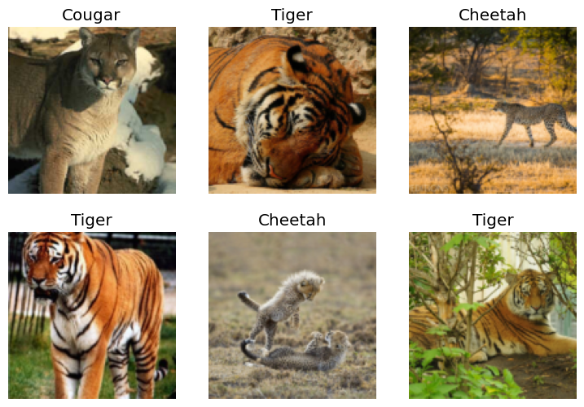
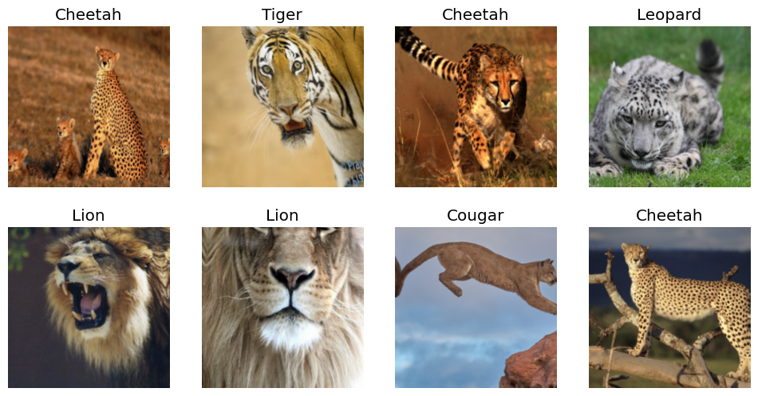
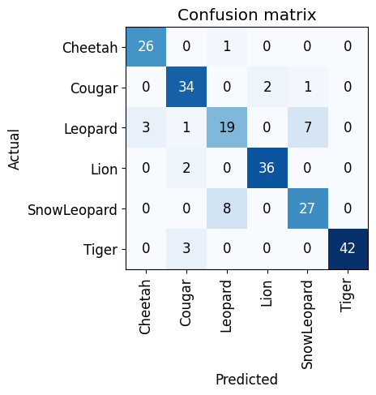
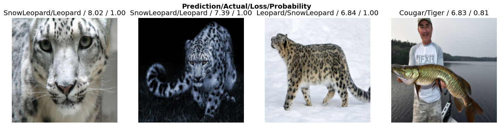
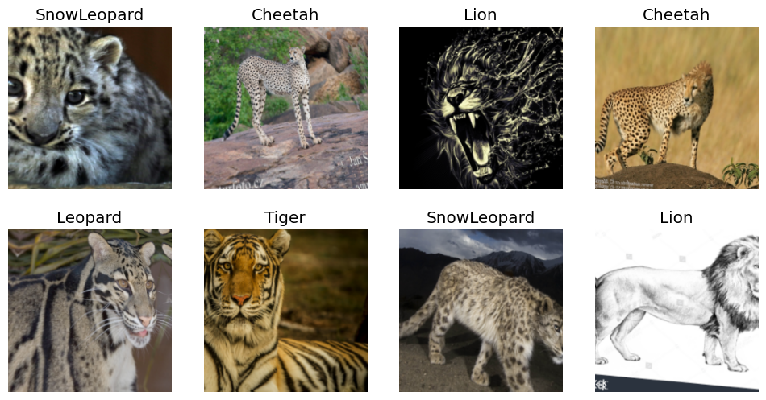
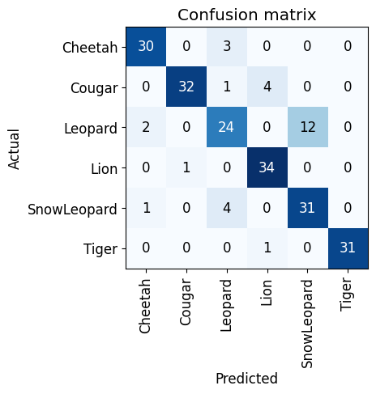
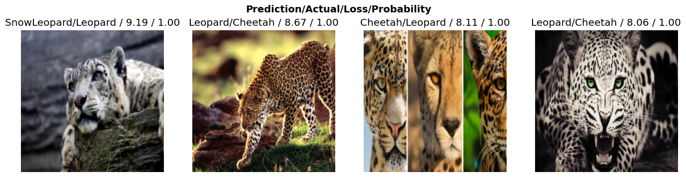

This notebook is to enhance my learning on lecture 2 of FAST AI course so I’ll be creating a big cat classification model
Let’s install all required packages
#hide
! [ -e /content ] && pip install -Uqq fastbook
import fastbook
fastbook.setup_book()
#hide
from fastbook import *
from fastai.vision.widgets import *[2K [90m━━━━━━━━━━━━━━━━━━━━━━━━━━━━━━━━━━━━━━━━[0m [32m719.8/719.8 kB[0m [31m7.6 MB/s[0m eta [36m0:00:00[0m
[2K [90m━━━━━━━━━━━━━━━━━━━━━━━━━━━━━━━━━━━━━━━━[0m [32m510.5/510.5 kB[0m [31m10.6 MB/s[0m eta [36m0:00:00[0m
[2K [90m━━━━━━━━━━━━━━━━━━━━━━━━━━━━━━━━━━━━━━━━[0m [32m116.3/116.3 kB[0m [31m12.1 MB/s[0m eta [36m0:00:00[0m
[2K [90m━━━━━━━━━━━━━━━━━━━━━━━━━━━━━━━━━━━━━━━━[0m [32m194.1/194.1 kB[0m [31m9.0 MB/s[0m eta [36m0:00:00[0m
[2K [90m━━━━━━━━━━━━━━━━━━━━━━━━━━━━━━━━━━━━━━━━[0m [32m134.8/134.8 kB[0m [31m15.4 MB/s[0m eta [36m0:00:00[0m
[2K [90m━━━━━━━━━━━━━━━━━━━━━━━━━━━━━━━━━━━━━━━━[0m [32m1.6/1.6 MB[0m [31m16.3 MB/s[0m eta [36m0:00:00[0m
[2K [90m━━━━━━━━━━━━━━━━━━━━━━━━━━━━━━━━━━━━━━━━[0m [32m23.7/23.7 MB[0m [31m15.0 MB/s[0m eta [36m0:00:00[0m
[2K [90m━━━━━━━━━━━━━━━━━━━━━━━━━━━━━━━━━━━━━━━━[0m [32m823.6/823.6 kB[0m [31m26.3 MB/s[0m eta [36m0:00:00[0m
[2K [90m━━━━━━━━━━━━━━━━━━━━━━━━━━━━━━━━━━━━━━━━[0m [32m14.1/14.1 MB[0m [31m53.7 MB/s[0m eta [36m0:00:00[0m
[2K [90m━━━━━━━━━━━━━━━━━━━━━━━━━━━━━━━━━━━━━━━━[0m [32m731.7/731.7 MB[0m [31m901.8 kB/s[0m eta [36m0:00:00[0m
[2K [90m━━━━━━━━━━━━━━━━━━━━━━━━━━━━━━━━━━━━━━━━[0m [32m410.6/410.6 MB[0m [31m2.0 MB/s[0m eta [36m0:00:00[0m
[2K [90m━━━━━━━━━━━━━━━━━━━━━━━━━━━━━━━━━━━━━━━━[0m [32m121.6/121.6 MB[0m [31m8.2 MB/s[0m eta [36m0:00:00[0m
[2K [90m━━━━━━━━━━━━━━━━━━━━━━━━━━━━━━━━━━━━━━━━[0m [32m56.5/56.5 MB[0m [31m12.1 MB/s[0m eta [36m0:00:00[0m
[2K [90m━━━━━━━━━━━━━━━━━━━━━━━━━━━━━━━━━━━━━━━━[0m [32m124.2/124.2 MB[0m [31m8.3 MB/s[0m eta [36m0:00:00[0m
[2K [90m━━━━━━━━━━━━━━━━━━━━━━━━━━━━━━━━━━━━━━━━[0m [32m196.0/196.0 MB[0m [31m2.3 MB/s[0m eta [36m0:00:00[0m
[2K [90m━━━━━━━━━━━━━━━━━━━━━━━━━━━━━━━━━━━━━━━━[0m [32m166.0/166.0 MB[0m [31m7.2 MB/s[0m eta [36m0:00:00[0m
[2K [90m━━━━━━━━━━━━━━━━━━━━━━━━━━━━━━━━━━━━━━━━[0m [32m99.1/99.1 kB[0m [31m15.6 MB/s[0m eta [36m0:00:00[0m
[2K [90m━━━━━━━━━━━━━━━━━━━━━━━━━━━━━━━━━━━━━━━━[0m [32m21.1/21.1 MB[0m [31m68.6 MB/s[0m eta [36m0:00:00[0m
[?25hMounted at /content/gdrive1. Download and sort out the data(images).
Extract Data using DuckDuckGo function 1. Create dynamic path according to there name store file 2. Create a dictionary to track the number of downloaded images per category (e.g., cat).
??search_images_ddgSignature: search_images_ddg(term, max_images=200)
cat_types = 'Leopard','Cougar','Tiger','Lion','Cheetah','SnowLeopard'
path = Path('CAT')
#remove folder with file in it
import shutil
if path.exists():
shutil.rmtree(path)
per_cat_count = {}
if not path.exists():
path.mkdir()
for o in cat_types:
dest = (path/o)
dest.mkdir(exist_ok=True)
results = search_images_ddg(f'{o}')
download_images(dest, urls=results)
per_cat_count[f'{o}'] = len(results)/usr/lib/python3.10/multiprocessing/popen_fork.py:66: RuntimeWarning: os.fork() was called. os.fork() is incompatible with multithreaded code, and JAX is multithreaded, so this will likely lead to a deadlock.
self.pid = os.fork()Count of Images per category
per_cat_count{'Leopard': 200,
'Cougar': 200,
'Tiger': 200,
'Lion': 200,
'Cheetah': 200,
'SnowLeopard': 200}So we got 200 images per type
While downloading we can get corrupt images lets first remove them. verify_images() will return path of such images and using unlink we can remove these files.
fns = get_image_files(path)
total_imagelength = len(fns)
failed = verify_images(fns)
failed_imagelength = len(failed)
failed(#51) [Path('CAT/Lion/d61427d6-f097-4727-a3ba-de31366199d6.jpg'),Path('CAT/Lion/85f17699-5ebe-4e88-9798-14b7e66281d7.png'),Path('CAT/Lion/84589c8d-a1da-45be-9fe6-1f87a34289b3.jpg'),Path('CAT/Lion/cf746926-23d6-4754-b7d0-25779410ee15.jpg'),Path('CAT/SnowLeopard/f3ce804b-5071-4312-8633-9895e721340c.jpg'),Path('CAT/SnowLeopard/961333aa-79da-4dc2-9f56-f4d07697a14e.jpg'),Path('CAT/SnowLeopard/57b3a667-1d3e-47bb-8fff-3e1505a5a12f.jpg'),Path('CAT/SnowLeopard/1b3f2639-1c5d-4e26-86c8-feb4b99bf76a.jpg'),Path('CAT/Cougar/cd7a89c9-8667-4d24-aceb-3a85bb7b247e.jpg'),Path('CAT/Cougar/44b6067c-f159-4d5f-819a-11e7d50a3fd8.jpg')...]failed.map(Path.unlink);
Dict = {"Total_Image_Count": total_imagelength, "Failed_Image_Count": failed_imagelength}
Dict{'Total_Image_Count': 1115, 'Failed_Image_Count': 51}2. Prepare data for model training (Data Loaders, Data Augmentaion, etc.).
Create a data block and load that data block in data loader.
- Data Block - Is a blueprint on how to assemble data that we want to send for training.
- Data Loader - Is used to pass that data which is in batch format(i.e created using data blocks) to the GPU.
big_cat = DataBlock(
blocks=(ImageBlock, CategoryBlock),
get_items=get_image_files,
splitter=RandomSplitter(valid_pct=0.2, seed=42),
get_y=parent_label,
item_tfms=Resize(128))
dls = big_cat.dataloaders(path)DataBlock is a convenient way to organize the data loading, splitting, and transformation steps in preparation for training a deep learning model using the fastai library.
DataBlock(): is suitable for a classification task where you have a dataset of images, and each image belongs to a specific category (e.g., types of cats).
blocks=(ImageBlock, CategoryBlock): It specify that our input are images & our target are categories(types of cat)
get_image_files: this help to get list of all the images from subfolder.
parent_label: This is a function that extracts the labels (categories) for each item.’Leapord’,‘Tiger’,‘Lion’
A DataLoaders includes validation and training DataLoader. Let’s check random validation dataset.
dls.valid.show_batch(max_n=6, nrows=2)
Squishing or Padding for Model Training :
- Squishing or padding is applied to images during training.
- Cropping may result in data loss, while squishing/stretching can lead to unrealistic shapes, impacting accuracy.
- Padding may introduce excessive empty space, causing wasted computation.
Practical Approach - Data Augmentation: The idea of getting different picture every time from same image is called data augmentation.
- Randomly select and crop parts of the image during each epoch.
- Train the model on different image parts across multiple epochs.
- This approach creates random variations in input data without altering its meaning.
- Aiming to provide diverse perspectives, it ensures the model sees different pictures from the same image in each iteration..
To train our model, we’ll use RandomResizedCrop with an image size of 224 px, which is fairly standard for image classification, and default aug_transforms:
big_cat = big_cat.new(
item_tfms=RandomResizedCrop(224, min_scale=0.5),
batch_tfms=aug_transforms())
big_cat_dls = big_cat.dataloaders(path)
big_cat_dls.train.show_batch(max_n=8, nrows=2)
3. Train the model
Tip1 - Prioritaize to train a quick and simple model first, rather than going for big model directly.
Tip2 - Build model first and then clean the data. And then again train the model.
learn = vision_learner(big_cat_dls, resnet18, metrics=error_rate)
learn.fine_tune(8)| epoch | train_loss | valid_loss | error_rate | time |
|---|---|---|---|---|
| 0 | 1.878671 | 0.548061 | 0.183962 | 00:36 |
| epoch | train_loss | valid_loss | error_rate | time |
|---|---|---|---|---|
| 0 | 0.669399 | 0.442041 | 0.160377 | 00:36 |
| 1 | 0.566393 | 0.425440 | 0.136792 | 00:38 |
| 2 | 0.476826 | 0.555463 | 0.179245 | 00:38 |
| 3 | 0.429597 | 0.524273 | 0.146226 | 00:37 |
| 4 | 0.367606 | 0.519690 | 0.117925 | 00:36 |
| 5 | 0.319734 | 0.529199 | 0.113208 | 00:37 |
| 6 | 0.287094 | 0.516044 | 0.127358 | 00:38 |
| 7 | 0.260760 | 0.514551 | 0.132075 | 00:36 |
Here we see, in last epoch rise in error_rate which means that in stochastic gradient descent we have surpassed deepest point and trending towards upward direction which leads to higher loss rate. It indicates that the training process should likely be stopped to prevent further divergence from the optimal solution
###Visualize Confusion Matrix
interp = ClassificationInterpretation.from_learner(learn)
interp.plot_confusion_matrix()
plot_top_losses shows us the images with the highest loss in our dataset.
interp.plot_top_losses(4, nrows=1, figsize=(18,4))
4. Clean the data
ImageClassifierCleaner enables us to review all images associated with a specific category and identify their placement within the dataloader, whether in the training or validation set.
The images are organized in ascending order of confidence, prioritizing those with the highest loss. This allows for efficient data sorting by simply examining the initial images. Users can choose to keep, delete, or modify the category label (type of cat) as needed.
#hide_output
cleaner = ImageClassifierCleaner(learn)
cleanerVBox(children=(Dropdown(options=('Cheetah', 'Cougar', 'Leopard', 'Lion', 'SnowLeopard', 'Tiger'), value='Cheet…The Cleaner possesses information regarding the files we deleted and whose labels we modified. Now, we will implement these changes.
for idx in cleaner.delete(): cleaner.fns[idx].unlink()
for idx,cat in cleaner.change(): shutil.move(str(cleaner.fns[idx]), path/cat)5. Re train the model using updated data
big_cat = DataBlock(
blocks=(ImageBlock, CategoryBlock),
get_items=get_image_files,
splitter=RandomSplitter(valid_pct=0.2, seed=42),
get_y=parent_label,
item_tfms=Resize(128))
big_cat = big_cat.new(
item_tfms=RandomResizedCrop(224, min_scale=0.5),
batch_tfms=aug_transforms())
big_cat_dls = big_cat.dataloaders(path)
big_cat_dls.train.show_batch(max_n=8, nrows=2)

learn = vision_learner(big_cat_dls, resnet34, metrics=error_rate)
learn.fine_tune(8)Downloading: "https://download.pytorch.org/models/resnet34-b627a593.pth" to /root/.cache/torch/hub/checkpoints/resnet34-b627a593.pth
100%|██████████| 83.3M/83.3M [00:00<00:00, 121MB/s]| epoch | train_loss | valid_loss | error_rate | time |
|---|---|---|---|---|
| 0 | 1.839337 | 0.557398 | 0.161137 | 00:36 |
| epoch | train_loss | valid_loss | error_rate | time |
|---|---|---|---|---|
| 0 | 0.552628 | 0.516515 | 0.137441 | 00:37 |
| 1 | 0.457381 | 0.544474 | 0.175355 | 00:42 |
| 2 | 0.399777 | 0.615449 | 0.146919 | 00:38 |
| 3 | 0.345620 | 0.601597 | 0.151659 | 00:40 |
| 4 | 0.293677 | 0.630620 | 0.146919 | 00:37 |
| 5 | 0.256501 | 0.669779 | 0.137441 | 00:37 |
| 6 | 0.227690 | 0.648144 | 0.142180 | 00:36 |
| 7 | 0.207254 | 0.651927 | 0.137441 | 00:37 |
interp = ClassificationInterpretation.from_learner(learn)
interp.plot_confusion_matrix()
interp.plot_top_losses(4, nrows=1, figsize=(17,4))
So by reading confusion matrix and looking at output from plot_top_losses, we can say that we still have a problem with our data and it will take lot more iteration to fix it. For now, let’s conclude our efforts at this point.
6. Let’s download our model and use it make prediction. In next lesson 😊.
learn.export('Lecture2_Big_Cat_Model.pkl')7. Live Model
You can access live model here deployed using Hugging Face & gradio. Wanna know how to do it ? refer Gradio-HuggingFace.
You can access repo here